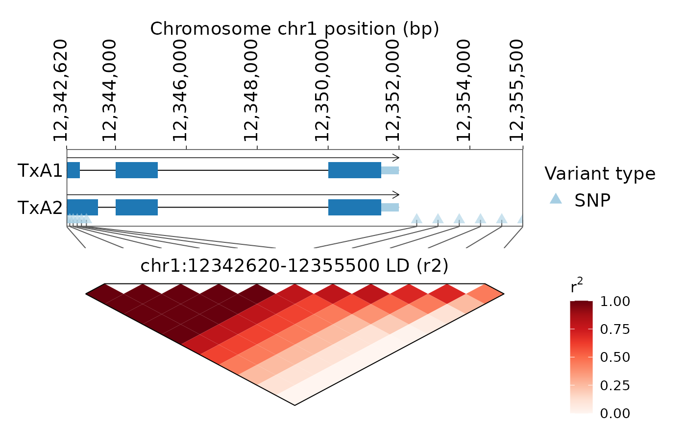

Draws an inverted triangular LD heatmap using ggplot2. For exactly two
variants, the single pairwise LD value is drawn as one diamond-shaped heatmap
cell, matching the 45-degree geometry used by the triangular LD matrix. Interior grid lines are suppressed; only the outside frame is drawn. The function accepts
either an LDTrack object or a VariantTrack/VCF path, in which case LD is
computed first by compute_ld_block(). The default return value is an
updated LDTrack object: LD calculation results remain in the object and the
generated plot is stored in LDTrack$figure. When show_region = TRUE, the region
track follows the compact gene-model style used by plot_hap_variant() in
GeneTrackR 0.3.15 and connects genomic variant markers to LD heatmap columns
with a shared x scale, so line endpoints remain aligned after resizing.
Usage
plot_ld_block(
object,
chrom = NULL,
start = NULL,
end = NULL,
variant_type = c("both", "snp", "ind"),
method = c("r2", "Dprime"),
color_palette = "Reds",
font = 14,
title = NULL,
label_by = c("pos", "variant_id"),
show_variant_labels = TRUE,
show_region = FALSE,
show_variant_marker = TRUE,
variant_marker_size = 2.8,
annotation = NULL,
connect_region = TRUE,
region_height = 1.25,
connector_height = 0.35,
heatmap_height = NULL,
samples = NULL,
min_pair_samples = 3L,
ploidy = 2L,
verbose = TRUE,
return_object = TRUE
)Arguments
- object
An
LDTrackobject, aVariantTrackobject, or a VCF path.- chrom, start, end
Optional region used when
objectis not anLDTrack.- variant_type
One of
both,snp, orindwhen computing from VCF.- method
LD method used when computing from VCF.
- color_palette
RColorBrewer palette name used to generate the continuous LD heatmap gradient. Default
Reds.- font
Base font size. Font color is always black.
- title
Plot title. Default is
chrom:start-end LD.- label_by
Variant label column, either
pos,variant_id, or another column inLDTrack$variants.- show_variant_labels
Logical. Whether to show labels above the heatmap.
- show_region
Logical. Whether to add a compact region/variant track above the LD heatmap.
- show_variant_marker
Logical. Whether to draw natural-variant triangle markers in the region track.
- variant_marker_size
Size of natural-variant triangle markers. Set to 0 to hide markers.
- annotation
Optional gene annotation used by the compact region track.
- connect_region
Logical. Whether to connect region-track variant positions to heatmap columns.
- region_height
Relative height of the compact region track.
- connector_height
Relative height of connector lines.
- heatmap_height
Relative height of the heatmap. If NULL, it is chosen from the number of variants.
- samples, min_pair_samples, ploidy, verbose
Passed to
compute_ld_block()whenobjectis not already anLDTrack.- return_object
Logical. Default TRUE. If TRUE, return an updated
LDTrackcontaining the figure in$figure; if FALSE, return the figure directly for compatibility with older scripts.
Value
By default, an updated LDTrack object with the generated figure
stored in $figure. If return_object = FALSE, the ggplot/patchwork figure
is returned directly.
Examples
vcf_file <- system.file("extdata", "gtr_demo_variants.vcf", package = "GeneTrackR")
anno_file <- system.file("extdata", "gtr_demo.genePredExt", package = "GeneTrackR")
vcf <- read_vcf(vcf_file, mode = "memory", verbose = FALSE)
anno <- read_genepred(anno_file, format = "genePredExt", verbose = FALSE)
ld <- compute_ld_block(
vcf,
chrom = "chr1",
start = 12342620,
end = 12355500,
variant_type = "snp",
verbose = FALSE
)
ld <- plot_ld_block(ld, show_region = TRUE, annotation = anno, show_variant_labels = FALSE)
ld$figure
